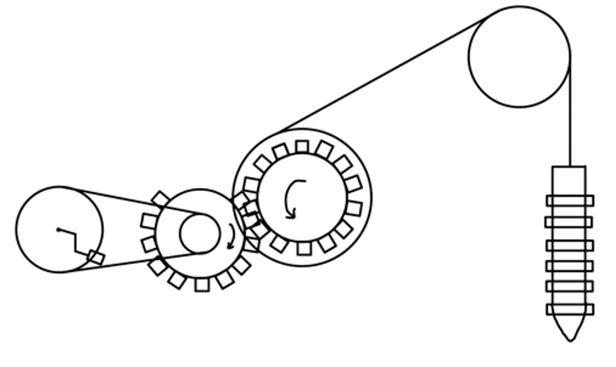
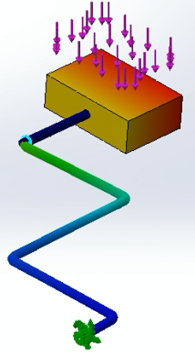
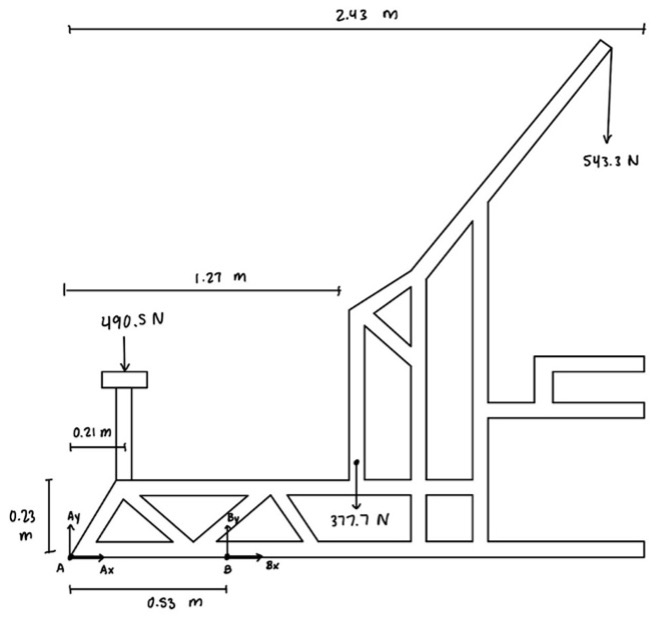

(05)
Pedal-Powered Well Driller
Developing a conceptual design of a well driller that relies on human-produced pedal power.
Overview
This project involved collaborating with a team to develop a modification of the Village Drill that relies on human-produced pedal power. Our objective was to develop the optimal design by considering such as equilibrium, power transmission, failure criteria, and the unique requirements of the community.
Design Process
My team began our design process by brainstorming mechanisms for translating the rotational motion of pedaling into the vertical motion of the driller. We also discussed how these mechanisms would integrate into our system-level designs. Our ideas included using a pile driver, a bevel gear, or a worm gear. After careful consideration of stakeholder input, specific customer needs, and the target specifications of our design, we chose to use the pile driver mechanism. The pile driver operates by lifting the driller up and dropping it.

Analysis Process
Once we finalized our design, we utilized SolidWorks to generate a Computer-Assisted Design (CAD) model of the system. Based on the properties and dimensions of our model, we conducted calculations to determine crucial parameters such as cable tension, pedal force, and reaction forces at fixed points within the structure. Based on the forces we identified, we determined the minimum pin diameters required to achieve a satisfactory factor of safety. Additionally, we conducted Finite Element Analysis (FEA) of the pedal to assess its structural integrity. Finally, we determined the power required to operate our design, and thus, the required pedal rotation rate.



Results
Upon analyzing our calculations, my team concluded that our final design was reasonable and efficient. This project gave me the opportunity to apply fundamental mechanical engineering principles, such as statics, stress analysis, and dynamics, to a real-world challenge. Through its completion, I gained valuable insights into the factors that must be taken into consideration throughout the design process and learned how to utilize metrics to gauge the success of a product.